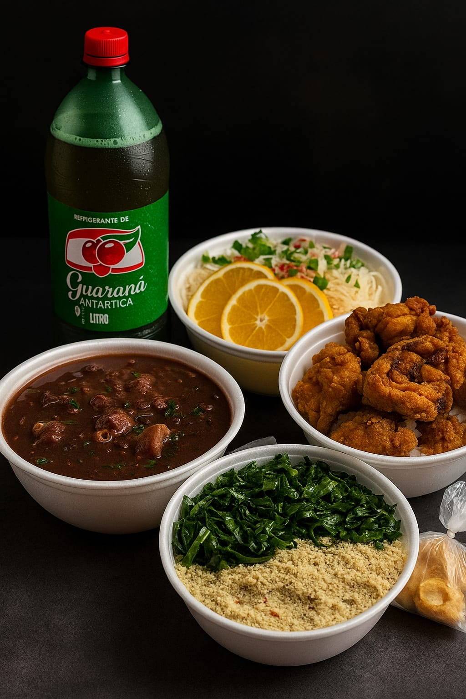

Marmitas completas
Refeições montadas para sustentar o dia, com acompanhamentos variados e aquele tempero que lembra comida feita em casa.
- Porção bem servida para o almoço
- Pedido direto pelo WhatsApp
- Opção prática para a rotina de Sinop
Restaurante e marmitaria em Sinop - MT
Desde 2018, a Madelin Marmitaria prepara comida de verdade para quem quer almoçar bem no salão, receber a marmita no endereço certo ou organizar refeições para a equipe.

Comida caseira, bem servida e pensada para o horario do almoco.
Um lugar pratico para comer bem sem sair da rotina.
Pedido encaminhado com agilidade para chegar no ponto certo.
Nota fiscal, boleto e faturamento mensal para facilitar o controle.
Comida de verdade
A Madelin combina sabor de comida caseira, porções completas e atendimento direto para quem precisa resolver o almoço com qualidade.
Refeições montadas para sustentar o dia, com acompanhamentos variados e aquele tempero que lembra comida feita em casa.
Para quem prefere almoçar com tranquilidade, perto da rotina e sem complicar o meio do dia.
Pedido no WhatsApp, preparo ágil e entrega em Sinop para manter o almoço dentro do horário.
Atendimento para empresas pequenas e grandes, com nota fiscal, boleto e faturamento mensal.
Para equipes
A Madelin atende empresas pequenas e grandes em Sinop, com emissão de nota fiscal, boleto e faturamento mensal para deixar as refeições da equipe mais simples de controlar.
Falar sobre empresaDocumentação para compras recorrentes e controle interno.
Pagamento prático para compras corporativas.
Mais organização para equipes que pedem com frequência.
Atendimento adaptado ao volume e à rotina de cada negócio.
Escolha como quer almoçar
Ideal para quem quer almoço completo, entrega rápida e contato direto pelo WhatsApp.
Almoço no local para quem está por perto da Avenida Jacarandás e prefere resolver a refeição sem espera longa.
Atendimento recorrente com nota fiscal, boleto e faturamento mensal para empresas de Sinop.
Madelin Marmitaria
Peça sua marmita, combine entrega, venha almoçar no salão ou fale sobre atendimento para sua empresa.
Como chegar
Abra o mapa, trace sua rota e venha almoçar com a Madelin Marmitaria em Sinop - MT.